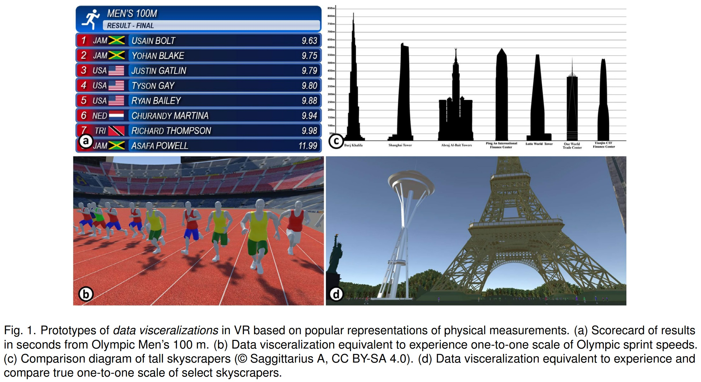

Study of UrbanRama
Data visualization has a powerful ability to abstract complex attributes and patterns but may lose the connection between the representation and the original meaning of real-life. Combining the user's knowledge and experience seems like a possible method to reduce the loss caused during the visual mapping.
This report introduced a tour of a datasheet, intent to facilitate the understanding of metaphor, and further give an intuitive concept of data visceralization. The author explored the using of data visceralization and identify six potential themes and factors for this approach.
- E1. Speed: Olympic Men’s 100 m
- E2. Distance: Olympic Men’s Long Jump
- E3. Height: Comparison of Skyscrapers
- E4. Scale: Solar System
- E5. Discrete Quantities (of Humans)
- E6. Abstract Measures: US Debt Visualized
Through the critical reflection by the authors, including perception, virtuality, realism, annotation, knowledge transfer, and data transformation, and the feedback from external participants, this paper illustrated the effectiveness and engagement of the VR prototypes built by the previous design. Finally, this paper discussed the limitations and future work as the conclusion.
This work was awarded Honourable Mention for Best Paper in IEEE InfoVis Conference (IEEE VIS) 2020.
B. Lee, D. Brown, B. Lee, C. Hurter, S. Drucker and T. Dwyer, "Data Visceralization: Enabling Deeper Understanding of Data Using Virtual Reality," in IEEE Transactions on Visualization and Computer Graphics. , vol. 27, no. 2, pp. 1095-1105, Feb. 2021, doi: 10.1109/TVCG.2020.3030435.